See: Chromebook to Lubuntubook for more details on replacing Chrome OS with a full-featured Linux on Chromebooks.
Ubuntu 14.04 "Trusty Tahr" is a Long Term Support (LTS) release of the popular Linux operating system. I use Ubuntu's minimal install image to setup the lightweight Lubuntu (Ubuntu + LXDE desktop) distro on the Acer C720 Chromebook.
Below is a visual walk-through of a sample install that makes use of an entire storage device divided into 3 partitions: a boot partition, and LUKS encrypted swap + root.
Let's go!
0. Prepare install media
Download the 64-bit trusty minimal installer and flash the image to a USB stick. An alternative (my choice) is adding the image to a USB stick with multiple Linux installers. Using the minimal console installer vs. the graphical Lubuntu installer provides more options during setup [1].

 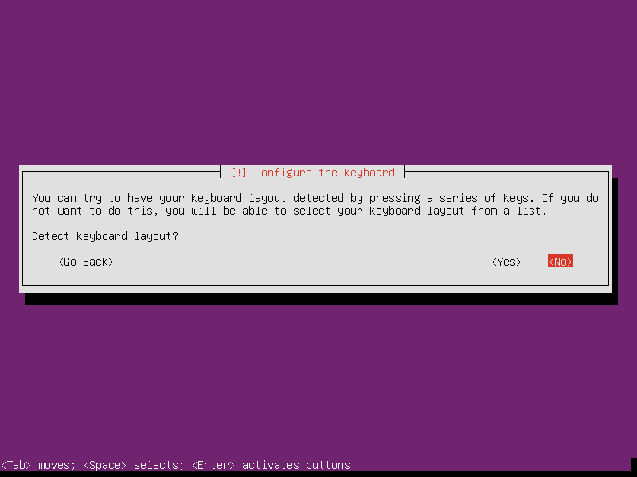
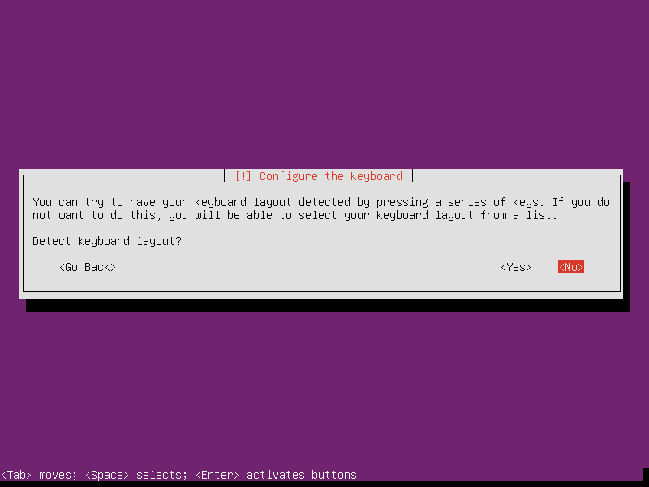

 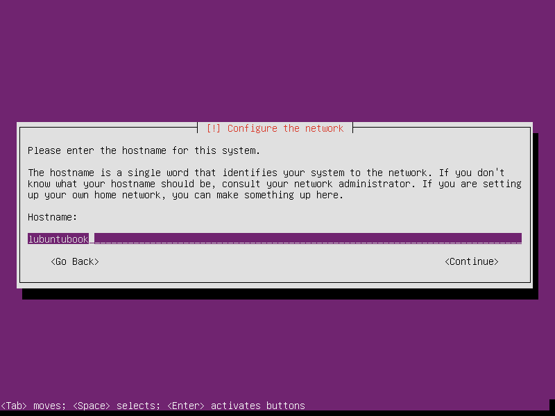
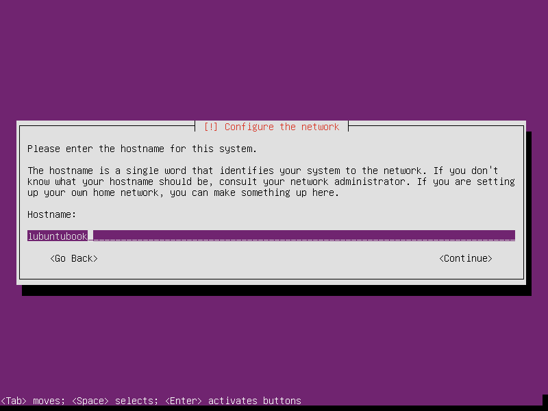


2. Partitions
In the example below we create 3 partitions on the disk:
- sda1 is a 300MB boot partition
- sda2 is a 512MB LUKS encrypted swap partition using a random key
- sda3 uses the remaining space as a LUKS encrypted root partition using a passphrase


 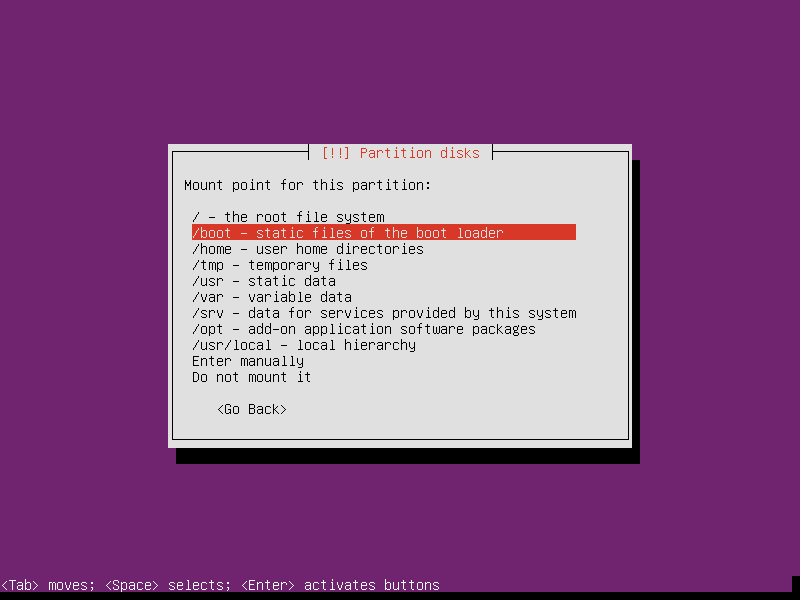
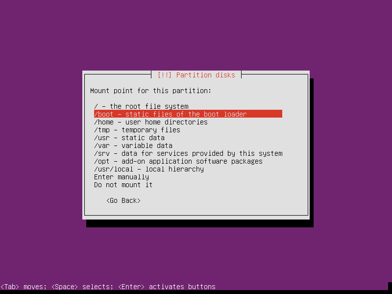
Setting Mount options to noatime decreases write operations and boosts drive speed:


If the hard disk has not been securely wiped prior to installing Lubuntu (using a utility like DBAN) you may want to configure Erase data: yes. Note, however, that depending on the size of the disk this operation can last several hours:


 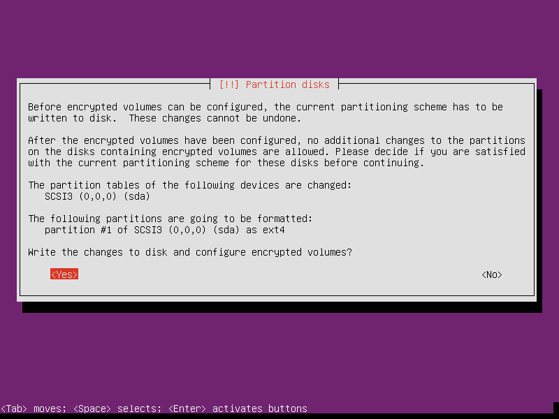
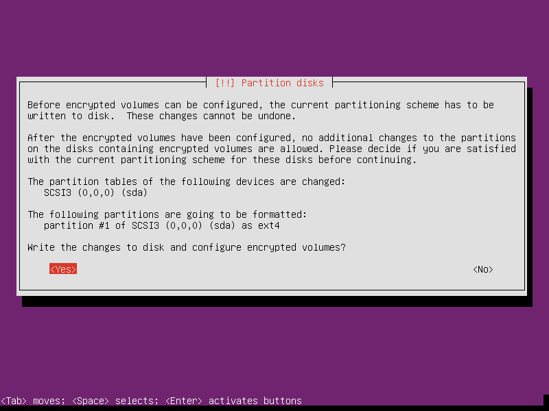

 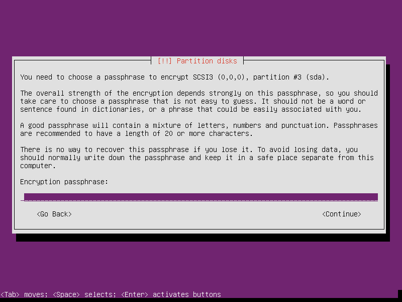
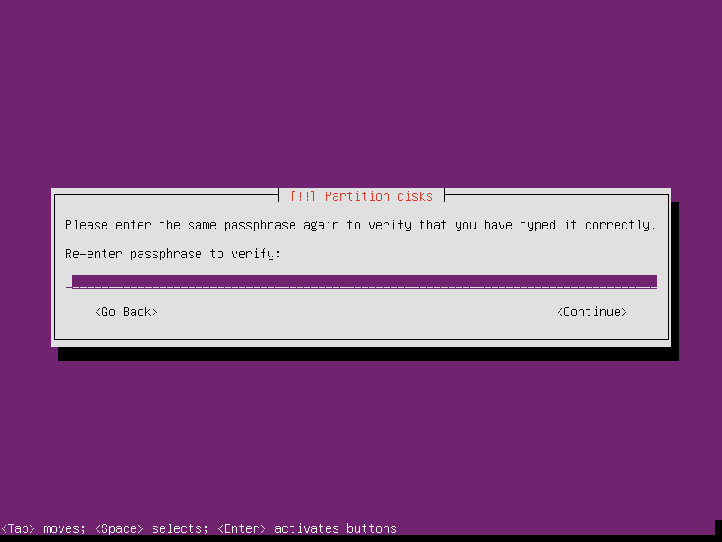
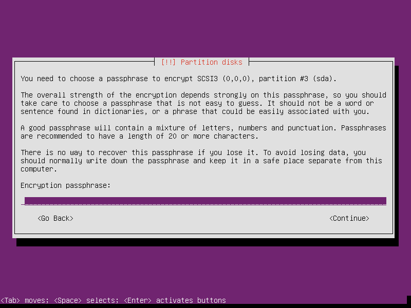
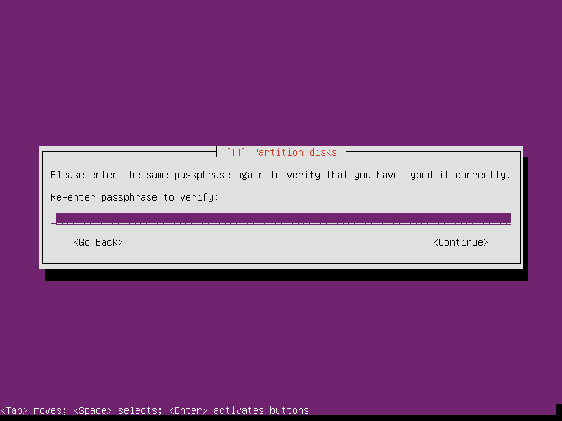
 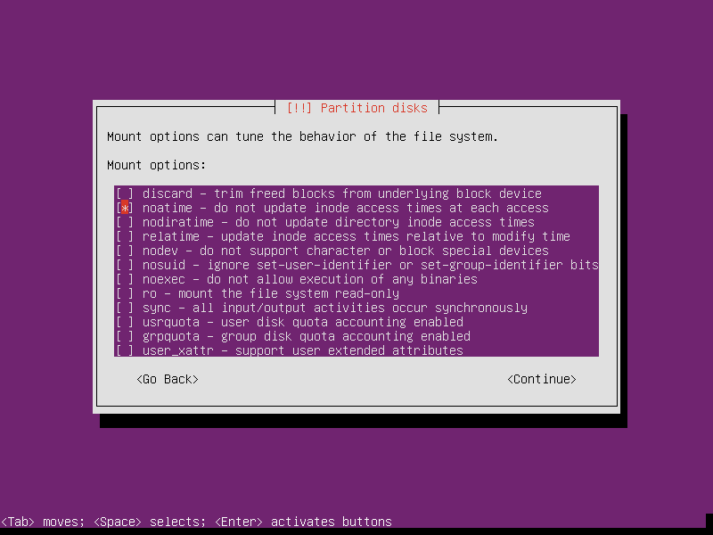
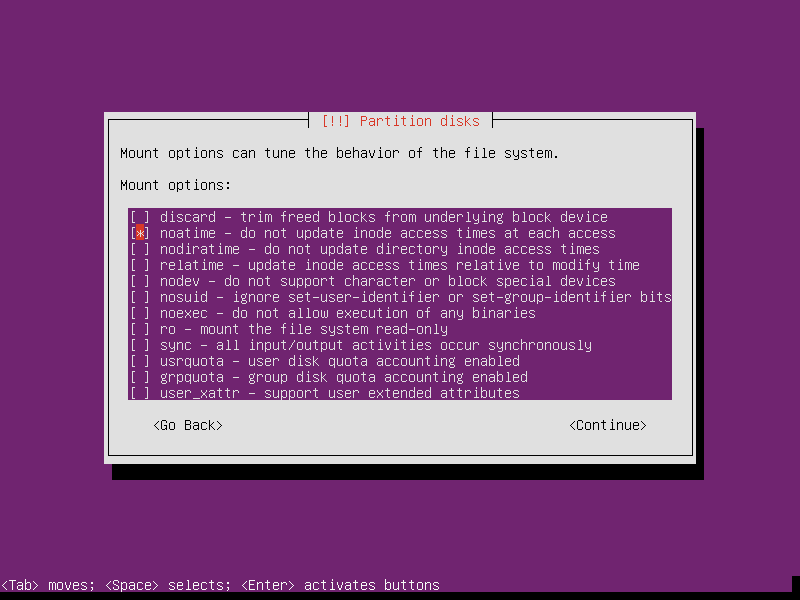

3. Install packages and finish up

Select Lubuntu Desktop. This task menu can also be accessed post-install by running:
$ sudo tasksel


System will display a passphrase prompt to unlock encrypted root partition:
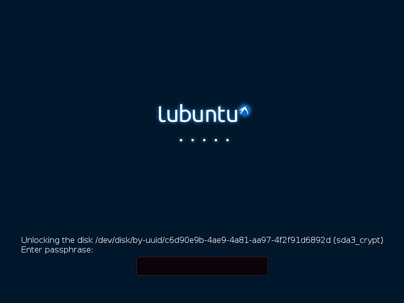Happy hacking!
Notes
| [1] | Specifically in this instance, the Ubuntu console installer provides a random key option for the encrypted swap partition. |
| [2] | Installer gets stuck at boot on Switched to clocksource tsc for a minute or so before resume. This is fixed post-install by modifying /etc/default/grub with kernel option tpm_tis.force=1. |